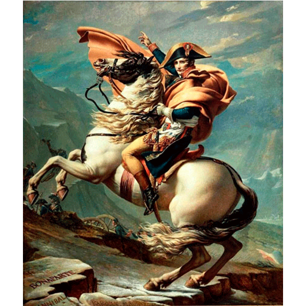
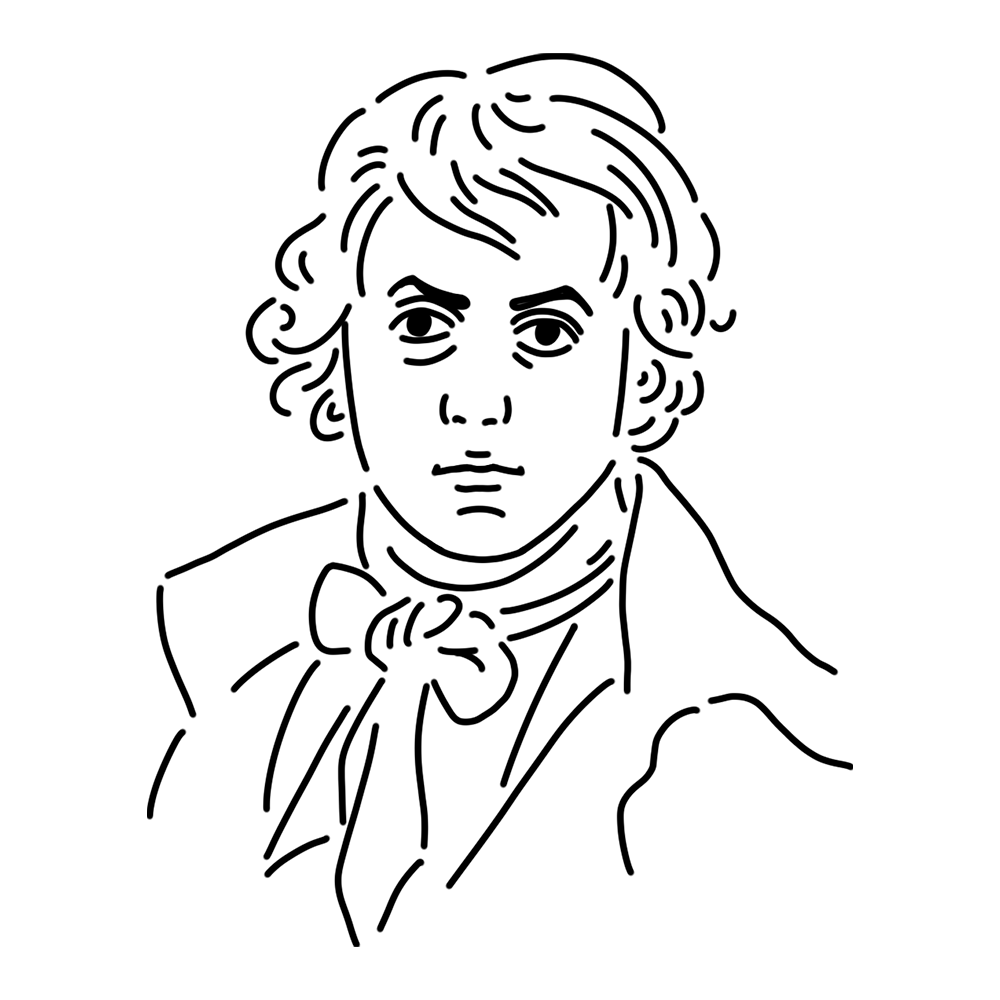

フランス革命の時期には政治家としても活動した、新古典主義を代表するミューズ。世渡りの上手さは「裏切り者」と非難されることさえあるが、彼女が忠誠を誓うのは己の中の理想、ただひとつだけなのである。
フランス王国
"サン＝ベルナール峠を越えるボナパルト"
"ナポレオン一世の戴冠式と皇妃ジョセフィーヌの戴冠"
"ホラティウス兄弟の誓い" etc.

1800年、アルプスのサン・ベルナール峠を超えイタリアに向かうナポレオン・ボナパルトを描いた作品。実際は足腰の強いラバに乗っていたのをナポレオンの注文で馬に変えたエピソードが残っている。ちなみに欧州では皇帝即位前を姓、即位後を名で呼ぶ習慣があるため、タイトルは「ボナパルト」になっている。
制作年
1801年
技法・材質
油彩、カンヴァス
寸法
261 cm x 221 cm
所蔵
マルメゾン城美術館（フランス）ほか

フランス新古典主義を代表する画家。御用達画家として残したナポレオンの肖像画は教科書で見たことがあるはず。冷徹さすら覚える厳格な古典主義に基づき描かれた歴史画は多くの弟子たちに影響を与えた。政治家としても盛んに活動し、革命を推進するジャコバン派としてフランス革命の歴史にも名を刻んでいる。亡命先のベルギーで没したが、ルイ16世の処刑に賛成した罪によりフランスでの埋葬ができなかったという。
1748年8月30日
December 29, 1825
1825年12月29日(77歳没)